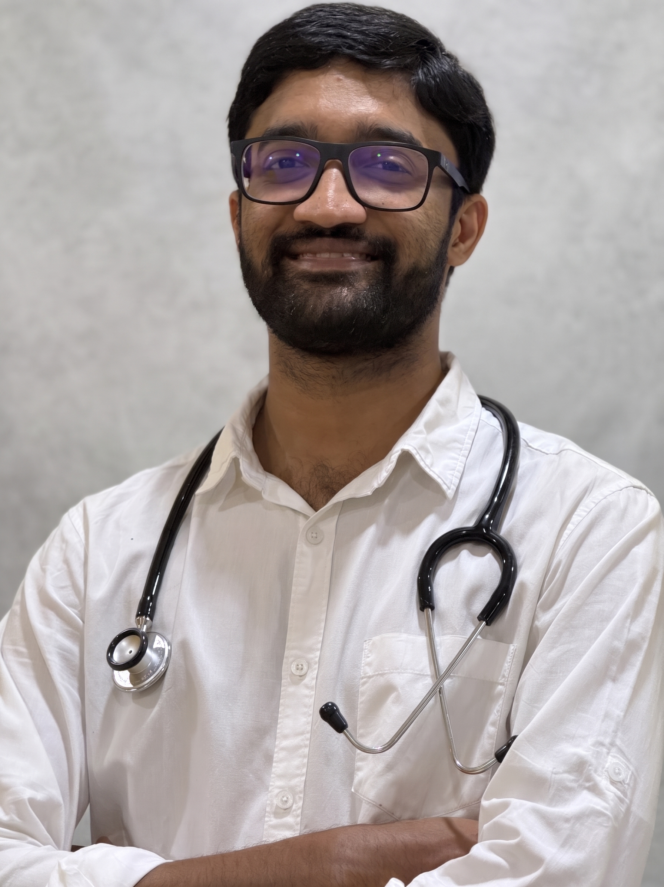

About Dr. Sharath Adiga
Consultant Neurologist, DM Neurology (NIMHANS)
Dr. Sharath Adiga is a consultant neurologist with specialised training in neurology from the National Institute of Mental Health and Neurosciences (NIMHANS), Bengaluru, one of India’s leading institutes for neurosciences.
He completed his MBBS at Mysore Medical College, Mysuru, followed by an MD in General Medicine at Government Medical College, Nagpur, and a DM in Neurology at NIMHANS, Bengaluru.
After his neurology training, he worked as a consultant neurologist at Sri Sri Neuro Hospital, Nizamabad, where he managed a wide range of neurological disorders, including stroke, epilepsy, movement disorders and neuromuscular conditions.
He then worked at Seth G.S. Medical College and KEM Hospital, Mumbai, gaining further experience with complex neurological conditions. This included comprehensive epilepsy care, drug-resistant epilepsy, epilepsy surgery evaluation and neurological emergencies.
Dr. Adiga also served as Assistant Professor in the Department of Neurology at Kasturba Medical College (KMC), Manipal. Working at a high-volume tertiary care teaching hospital gave him extensive exposure to a broad spectrum of neurological disorders, including complex cases referred from across the region, along with academic teaching and multidisciplinary patient care.
His clinical interests include migraine and other headache disorders, stroke, epilepsy, Parkinson’s disease and other movement disorders, multiple sclerosis and other neuroimmunological illnesses, and neurocritical care.
He emphasises careful clinical evaluation, evidence-based treatment, clear communication and continuity of care.

Qualifications
- 2009 – 2015
MBBS
Mysore Medical College, Mysuru
- 2016 – 2019
MD, General Medicine
Government Medical College, Nagpur
- 2020 – 2022
DM, Neurology
National Institute of Mental Health and Neurosciences (NIMHANS), Bengaluru
Professional experience
- Assistant ProfessorDepartment of Neurology, Kasturba Medical College (KMC), Manipal
- Senior ResidentDepartment of Neurology, Seth G.S. Medical College and KEM Hospital, Mumbai
- Consultant NeurologistSri Sri Neuro Hospital, Nizamabad
- DM Neurology trainingNIMHANS, Bengaluru
Academic and research work
Dr. Adiga has been involved in clinical research and academic work, including publications in peer-reviewed medical journals. His research includes work on epilepsy, status epilepticus and other neurological disorders. He has presented at academic conferences and taught medical students and postgraduate trainees.
Selected publications
- New onset status epilepticus and its long-term outcome: a cohort study. Epilepsy Research, 2024.
- Phenotype, outcome, interleukins and miRNA levels assessment of new onset refractory status epilepticus (NORSE): a prospective cohort study. Epileptic Disorders, 2025.
- Muscle rippling and myoedema in CAVIN1-related congenital lipodystrophy type 4. AAN journal, 2025.
- EEG observations in probable sporadic CJD. Annals of Indian Academy of Neurology, 2020.
Memberships
- Indian Association of Neurologists
- Indian Medical Association
Karnataka Medical Council Registration No. 110866
Book an appointment
Call Hitech Medicare Hospital, Udupi, to book an OPD consultation.